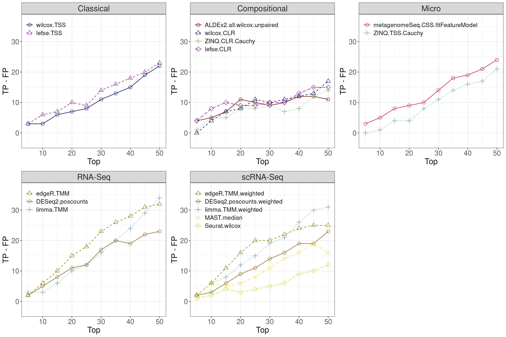

HMP_2012_16S_gingival_V35_subset - subgingival vs supragingival
Source:vignettes/articles/HMP_2012_16S_gingival_V35_subset.Rmd
HMP_2012_16S_gingival_V35_subset.Rmd
library(MicrobiomeBenchmarkDataAnalyses)
library(MicrobiomeBenchmarkData)
library(mia)
library(benchdamic)
library(dplyr)
library(ggplot2)
library(gridExtra)
library(purrr)Import data
dat_name <-'HMP_2012_16S_gingival_V35_subset'
conditions_col <- 'body_subsite'
conditions <- c(condB = 'subgingival_plaque', condA = 'supragingival_plaque')
tse <- getBenchmarkData(dat_name, dryrun = FALSE)[[1]]
tse <- filterTaxa(tse)
colData(tse)[[conditions_col]] <-
factor(colData(tse)[[conditions_col]], levels = conditions)
tse## class: TreeSummarizedExperiment
## dim: 783 76
## metadata(0):
## assays(1): counts
## rownames(783): OTU_97.31247 OTU_97.44487 ... OTU_97.45365 OTU_97.45307
## rowData names(7): kingdom phylum ... genus taxon_annotation
## colnames(76): 700023057 700023179 ... 700114009 700114338
## colData names(13): dataset subject_id ... sequencing_method
## variable_region_16s
## reducedDimNames(0):
## mainExpName: NULL
## altExpNames(0):
## rowLinks: a LinkDataFrame (783 rows)
## rowTree: 1 phylo tree(s) (892 leaves)
## colLinks: NULL
## colTree: NULLPrior knowledge
row_data <- as.data.frame(rowData(tse))
prior_info <- row_data[, c('genus', 'taxon_annotation')]
prior_info$taxon_name <- rownames(prior_info)
prior_info$new_names <- paste0(prior_info$taxon_name, '|', prior_info$genus)
head(prior_info)## genus taxon_annotation taxon_name
## OTU_97.31247 Streptococcus facultative_anaerobic OTU_97.31247
## OTU_97.44487 Streptococcus facultative_anaerobic OTU_97.44487
## OTU_97.34979 Streptococcus facultative_anaerobic OTU_97.34979
## OTU_97.34572 Streptococcus facultative_anaerobic OTU_97.34572
## OTU_97.42259 Streptococcus facultative_anaerobic OTU_97.42259
## OTU_97.34698 Streptococcus facultative_anaerobic OTU_97.34698
## new_names
## OTU_97.31247 OTU_97.31247|Streptococcus
## OTU_97.44487 OTU_97.44487|Streptococcus
## OTU_97.34979 OTU_97.34979|Streptococcus
## OTU_97.34572 OTU_97.34572|Streptococcus
## OTU_97.42259 OTU_97.42259|Streptococcus
## OTU_97.34698 OTU_97.34698|StreptococcusConvert to phyloseq
ps <- makePhyloseqFromTreeSummarizedExperiment(tse)
phyloseq::sample_data(ps)$body_subsite <-
factor(phyloseq::sample_data(ps)$body_subsite)
ps## phyloseq-class experiment-level object
## otu_table() OTU Table: [ 783 taxa and 76 samples ]
## sample_data() Sample Data: [ 76 samples by 13 sample variables ]
## tax_table() Taxonomy Table: [ 783 taxa by 6 taxonomic ranks ]
## phy_tree() Phylogenetic Tree: [ 783 tips and 778 internal nodes ]Run DA
ps <- runNormalizations(set_norm_list(), ps, verbose = FALSE)
zw <- weights_ZINB(ps, design = conditions_col)
DA_methods <- set_DA_methods_list(conditions_col, conditions)
for (i in seq_along(DA_methods)) {
if (grepl("Seurat", names(DA_methods)[i])) {
names(DA_methods[[i]]$contrast) <- NULL
} else {
next
}
}
names(DA_methods)## [1] "DA_edgeR.1" "DA_edgeR.1" "DA_DESeq2.1"
## [4] "DA_DESeq2.1" "DA_limma.1" "DA_limma.1"
## [7] "DA_metagenomeSeq.1" "DA_ALDEx2.1" "DA_MAST.1"
## [10] "DA_Seurat.1" "ancombc.1" "wilcox.3"
## [13] "wilcox.4" "ZINQ.9" "ZINQ.10"
## [16] "lefse.12" "lefse.13"Run all of the differential analysis (DA) methods:
tim <- system.time({
DA_output <- vector("list", length(DA_methods))
for (i in seq_along(DA_output)) {
# message(
# "Running method ", i, ": ", names(DA_methods)[i], " - ", Sys.time()
# )
DA_output[[i]] <- tryCatch(
error = function(e) NULL,
runDA(DA_methods[i], ps, weights = zw, verbose = FALSE)
)
}
DA_output <- purrr::list_flatten(DA_output, name_spec = "{inner}")
DA_output <- purrr::discard(DA_output, is.null)
})
tim## user system elapsed
## 255.620 10.078 254.179Enrichment
Get direction
direction <- get_direction_cols(DA_output, conditions_col, conditions)Enrichment (adjP <= 0.1)
enrichment <- createEnrichment(
object = DA_output,
priorKnowledge = prior_info,
enrichmentCol = "taxon_annotation",
namesCol = "new_names",
slot = "pValMat", colName = "adjP", type = "pvalue",
direction = direction,
threshold_pvalue = 0.1,
threshold_logfc = 0,
top = NULL, # No top feature selected
alternative = "greater",
verbose = FALSE
)Plot enrichment
enrich_plot <- plot_enrichment(
enrichment = enrichment,
enrichment_col = "taxon_annotation",
levels_to_plot = c("aerobic", "anaerobic", "facultative_anaerobic"),
conditions = c(condB = 'subgingival', condA = 'supragingival')
)
enrich_plot2 <- plot_enrichment_2(
enrich_plot,
dir = c(up = 'Sup Plq', down = 'Sub Plq')
)
enrich_plot2
Putative true positives - putative false positives
Calculate TP - FP ratio (no threshold)
positives <- createPositives(
object = DA_output,
priorKnowledge = prior_info,
enrichmentCol = "taxon_annotation", namesCol = "new_names",
slot = "pValMat", colName = "adjP", type = "pvalue",
direction = direction,
threshold_pvalue = 1,
threshold_logfc = 0,
top = seq.int(from = 0, to = 50, by = 5),
alternative = "greater",
verbose = FALSE,
TP = list(c("DOWN Abundant", "anaerobic"), c("UP Abundant", "aerobic")),
FP = list(c("DOWN Abundant", "aerobic"), c("UP Abundant", "anaerobic"))
) |>
left_join(get_meth_class(), by = 'method')Plot TP - FP
positive_plots <- plot_positives(positives) |>
map( ~ {
.x +
theme(
axis.title = element_text(size = 17),
axis.text = element_text(size = 15),
legend.text = element_text(size = 13),
strip.text = element_text(size = 17)
)
})
grid.arrange(grobs = positive_plots, ncol = 3)
Session info
## R version 4.4.1 (2024-06-14)
## Platform: x86_64-pc-linux-gnu
## Running under: Ubuntu 22.04.4 LTS
##
## Matrix products: default
## BLAS: /usr/lib/x86_64-linux-gnu/openblas-pthread/libblas.so.3
## LAPACK: /usr/lib/x86_64-linux-gnu/openblas-pthread/libopenblasp-r0.3.20.so; LAPACK version 3.10.0
##
## locale:
## [1] LC_CTYPE=en_US.UTF-8 LC_NUMERIC=C
## [3] LC_TIME=en_US.UTF-8 LC_COLLATE=en_US.UTF-8
## [5] LC_MONETARY=en_US.UTF-8 LC_MESSAGES=en_US.UTF-8
## [7] LC_PAPER=en_US.UTF-8 LC_NAME=C
## [9] LC_ADDRESS=C LC_TELEPHONE=C
## [11] LC_MEASUREMENT=en_US.UTF-8 LC_IDENTIFICATION=C
##
## time zone: Etc/UTC
## tzcode source: system (glibc)
##
## attached base packages:
## [1] stats4 stats graphics grDevices utils datasets methods
## [8] base
##
## other attached packages:
## [1] doRNG_1.8.6
## [2] rngtools_1.5.2
## [3] foreach_1.5.2
## [4] purrr_1.0.2
## [5] gridExtra_2.3
## [6] ggplot2_3.5.1
## [7] dplyr_1.1.4
## [8] benchdamic_1.9.4
## [9] mia_1.12.0
## [10] MultiAssayExperiment_1.30.2
## [11] MicrobiomeBenchmarkData_1.6.0
## [12] TreeSummarizedExperiment_2.12.0
## [13] Biostrings_2.72.1
## [14] XVector_0.44.0
## [15] SingleCellExperiment_1.26.0
## [16] SummarizedExperiment_1.34.0
## [17] Biobase_2.64.0
## [18] GenomicRanges_1.56.1
## [19] GenomeInfoDb_1.40.1
## [20] IRanges_2.38.1
## [21] S4Vectors_0.42.1
## [22] BiocGenerics_0.50.0
## [23] MatrixGenerics_1.16.0
## [24] matrixStats_1.3.0
## [25] MicrobiomeBenchmarkDataAnalyses_0.99.11
##
## loaded via a namespace (and not attached):
## [1] igraph_2.0.3 ica_1.0-3
## [3] plotly_4.10.4 Formula_1.2-5
## [5] scater_1.32.0 zlibbioc_1.50.0
## [7] tidyselect_1.2.1 bit_4.0.5
## [9] doParallel_1.0.17 clue_0.3-65
## [11] lattice_0.22-6 blob_1.2.4
## [13] stringr_1.5.1 S4Arrays_1.4.1
## [15] tidytext_0.4.2 parallel_4.4.1
## [17] png_0.1-8 ZINQ_1.0
## [19] cli_3.6.3 CVXR_1.0-14
## [21] multtest_2.60.0 goftest_1.2-3
## [23] pkgdown_2.1.0 textshaping_0.4.0
## [25] bluster_1.14.0 tokenizers_0.3.0
## [27] BiocNeighbors_1.22.0 uwot_0.2.2
## [29] curl_5.2.1 zinbwave_1.26.0
## [31] mime_0.12 evaluate_0.24.0
## [33] tidytree_0.4.6 leiden_0.4.3.1
## [35] coin_1.4-3 stringi_1.8.4
## [37] corncob_0.4.1 backports_1.5.0
## [39] fBasics_4032.96 desc_1.4.3
## [41] XML_3.99-0.17 lmerTest_3.1-3
## [43] gsl_2.1-8 Exact_3.2
## [45] httpuv_1.6.15 Wrench_1.22.0
## [47] AnnotationDbi_1.66.0 magrittr_2.0.3
## [49] splines_4.4.1 getopt_1.20.4
## [51] jpeg_0.1-10 pcaPP_2.0-4
## [53] sctransform_0.4.1 rootSolve_1.8.2.4
## [55] ggbeeswarm_0.7.2 statip_0.2.3
## [57] DBI_1.2.3 genefilter_1.86.0
## [59] jquerylib_0.1.4 withr_3.0.0
## [61] corpcor_1.6.10 class_7.3-22
## [63] systemfonts_1.1.0 lmtest_0.9-40
## [65] htmlwidgets_1.6.4 fs_1.6.4
## [67] directlabels_2024.1.21 mixOmics_6.28.0
## [69] ggrepel_0.9.5 labeling_0.4.3
## [71] dearseq_1.16.0 SparseArray_1.4.8
## [73] DESeq2_1.44.0 cellranger_1.1.0
## [75] DEoptimR_1.1-3 spatial_7.3-17
## [77] RcppZiggurat_0.1.6 annotate_1.82.0
## [79] lmom_3.0 truncnorm_1.0-9
## [81] reticulate_1.38.0 zoo_1.8-12
## [83] knitr_1.48 UCSC.utils_1.0.0
## [85] modeest_2.4.0 decontam_1.24.0
## [87] fansi_1.0.6 patchwork_1.2.0
## [89] caTools_1.18.2 grid_4.4.1
## [91] rhdf5_2.48.0 data.table_1.15.4
## [93] timeDate_4032.109 biglm_0.9-3
## [95] vegan_2.6-6.1 quantreg_5.98
## [97] RSpectra_0.16-1 irlba_2.3.5.1
## [99] janeaustenr_1.0.0 fastDummies_1.7.3
## [101] DescTools_0.99.54 ade4_1.7-22
## [103] lazyeval_0.2.2 yaml_2.3.9
## [105] survival_3.7-0 scattermore_1.2
## [107] crayon_1.5.3 phyloseq_1.48.0
## [109] RcppAnnoy_0.0.22 RColorBrewer_1.1-3
## [111] tidyr_1.3.1 progressr_0.14.0
## [113] later_1.3.2 zCompositions_1.5.0-4
## [115] ggridges_0.5.6 codetools_0.2-20
## [117] base64enc_0.1-3 KEGGREST_1.44.1
## [119] Seurat_5.1.0 Rtsne_0.17
## [121] shape_1.4.6.1 limma_3.60.3
## [123] filelock_1.0.3 foreign_0.8-86
## [125] pkgconfig_2.0.3 MicrobiomeStat_1.2
## [127] rmutil_1.1.10 spatstat.sparse_3.1-0
## [129] ape_5.8 viridisLite_0.4.2
## [131] xtable_1.8-4 interp_1.1-6
## [133] highr_0.11 plyr_1.8.9
## [135] httr_1.4.7 rbibutils_2.2.16
## [137] tools_4.4.1 globals_0.16.3
## [139] SeuratObject_5.0.2 Rfast_2.1.0
## [141] beeswarm_0.4.0 htmlTable_2.4.2
## [143] checkmate_2.3.1 nlme_3.1-165
## [145] dbplyr_2.5.0 MatrixModels_0.5-3
## [147] lme4_1.1-35.5 digest_0.6.36
## [149] optparse_1.7.5 permute_0.9-7
## [151] numDeriv_2016.8-1.1 Matrix_1.7-0
## [153] farver_2.1.2 reshape2_1.4.4
## [155] SnowballC_0.7.1 yulab.utils_0.1.4
## [157] viridis_0.6.5 DirichletMultinomial_1.46.0
## [159] rpart_4.1.23 glue_1.7.0
## [161] cachem_1.1.0 BiocFileCache_2.12.0
## [163] polyclip_1.10-6 Hmisc_5.1-3
## [165] generics_0.1.3 CompQuadForm_1.4.3
## [167] mvtnorm_1.2-5 NADA_1.6-1.1
## [169] metagenomeSeq_1.46.0 survey_4.4-2
## [171] parallelly_1.37.1 biomformat_1.32.0
## [173] statmod_1.5.0 RcppHNSW_0.6.0
## [175] ragg_1.3.2 ScaledMatrix_1.12.0
## [177] minqa_1.2.7 pbapply_1.7-2
## [179] ANCOMBC_2.6.0 timeSeries_4032.109
## [181] glmnet_4.1-8 spam_2.10-0
## [183] utf8_1.2.4 ALDEx2_1.36.0
## [185] mitools_2.4 gtools_3.9.5
## [187] readxl_1.4.3 softImpute_1.4-1
## [189] shiny_1.8.1.1 GenomeInfoDbData_1.2.12
## [191] energy_1.7-11 rhdf5filters_1.16.0
## [193] memoise_2.0.1 rmarkdown_2.27
## [195] scales_1.3.0 stabledist_0.7-1
## [197] gld_2.6.6 future_1.33.2
## [199] RANN_2.6.1 spatstat.data_3.1-2
## [201] rstudioapi_0.16.0 cluster_2.1.6
## [203] Maaslin2_1.18.0 hms_1.1.3
## [205] GUniFrac_1.8 spatstat.utils_3.0-5
## [207] fitdistrplus_1.1-11 munsell_0.5.1
## [209] cowplot_1.1.3 colorspace_2.1-0
## [211] ellipse_0.5.0 rlang_1.1.4
## [213] ggdendro_0.2.0 quadprog_1.5-8
## [215] DelayedMatrixStats_1.26.0 sparseMatrixStats_1.16.0
## [217] dotCall64_1.1-1 scuttle_1.14.0
## [219] mgcv_1.9-1 xfun_0.45
## [221] NOISeq_2.48.0 e1071_1.7-14
## [223] TH.data_1.1-2 iterators_1.0.14
## [225] modeltools_0.2-23 rARPACK_0.11-0
## [227] abind_1.4-5 tibble_3.2.1
## [229] libcoin_1.0-10 treeio_1.28.0
## [231] gmp_0.7-4 Rhdf5lib_1.26.0
## [233] DECIPHER_3.0.0 bitops_1.0-7
## [235] Rdpack_2.6 promises_1.3.0
## [237] inline_0.3.19 RSQLite_2.3.7
## [239] sandwich_3.1-0 DelayedArray_0.30.1
## [241] proxy_0.4-27 Rmpfr_0.9-5
## [243] compiler_4.4.1 forcats_1.0.0
## [245] prettyunits_1.2.0 boot_1.3-30
## [247] beachmat_2.20.0 SparseM_1.84
## [249] microbiome_1.26.0 listenv_0.9.1
## [251] Rcpp_1.0.12 edgeR_4.2.0
## [253] BiocSingular_1.20.0 tensor_1.5
## [255] progress_1.2.3 MASS_7.3-61
## [257] BiocParallel_1.38.0 MAST_1.30.0
## [259] stable_1.1.6 spatstat.random_3.2-3
## [261] R6_2.5.1 fastmap_1.2.0
## [263] multcomp_1.4-25 vipor_0.4.7
## [265] ROCR_1.0-11 rsvd_1.0.5
## [267] nnet_7.3-19 gtable_0.3.5
## [269] KernSmooth_2.23-24 latticeExtra_0.6-30
## [271] miniUI_0.1.1.1 deldir_2.0-4
## [273] htmltools_0.5.8.1 RcppParallel_5.1.8
## [275] bit64_4.0.5 spatstat.explore_3.2-7
## [277] lifecycle_1.0.4 MGLM_0.2.1
## [279] nloptr_2.1.1 sass_0.4.9
## [281] vctrs_0.6.5 robustbase_0.99-3
## [283] spatstat.geom_3.2-9 sp_2.1-4
## [285] future.apply_1.11.2 bslib_0.7.0
## [287] pillar_1.9.0 gplots_3.1.3.1
## [289] locfit_1.5-9.10 jsonlite_1.8.8
## [291] expm_0.999-9